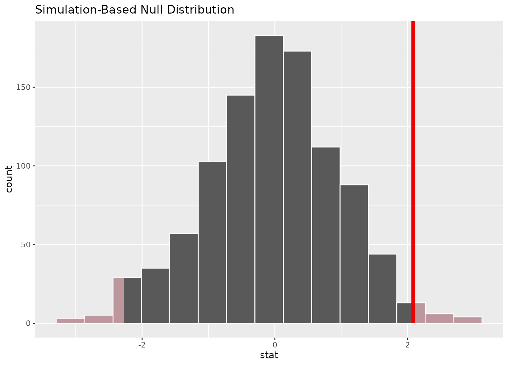
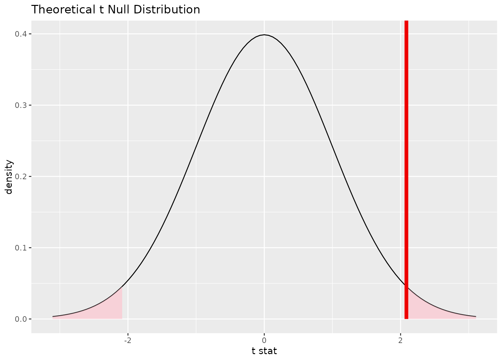
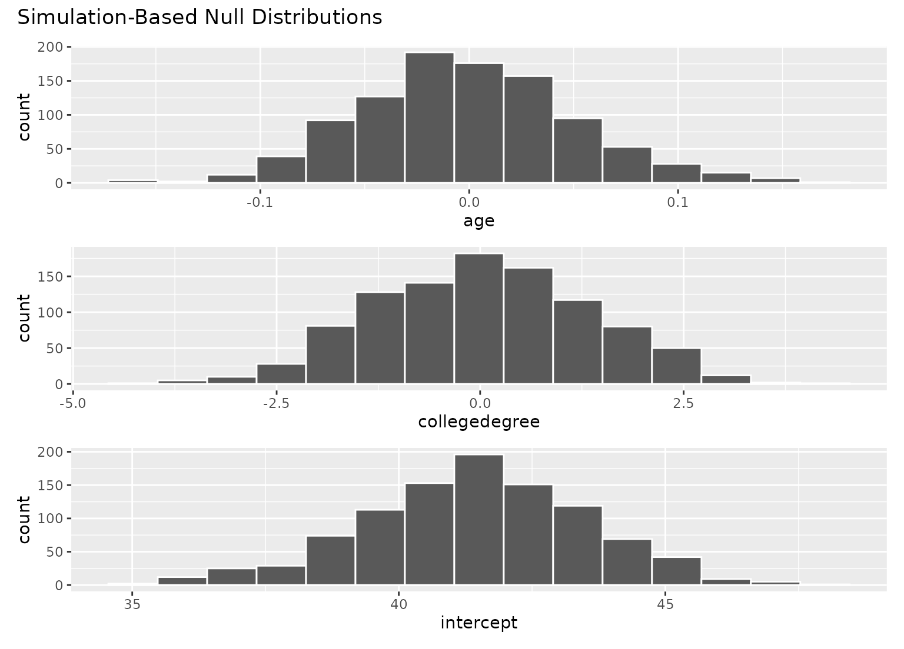
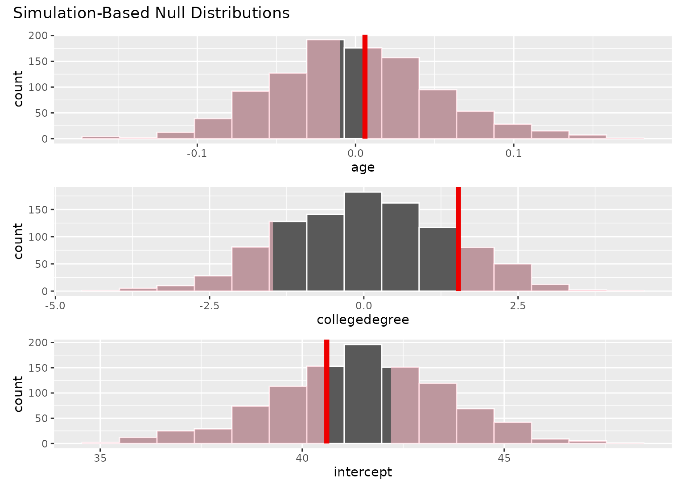
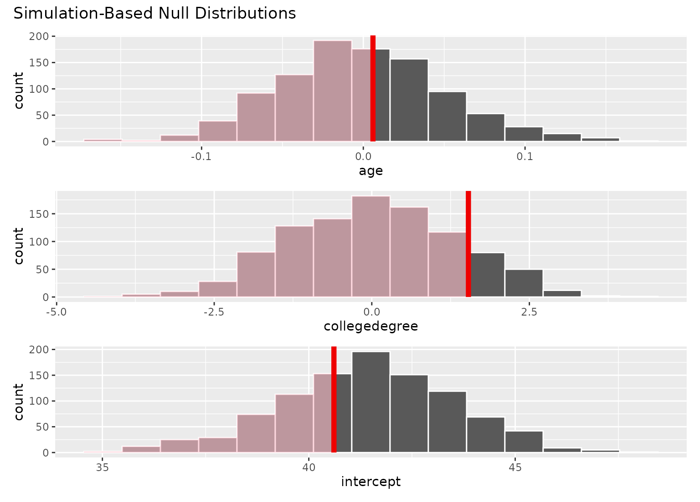

shade_p_value() plots a p-value region on top of
visualize() output. The output is a ggplot2 layer that can be added with
+. The function has a shorter alias, shade_pvalue().
Learn more in vignette("infer").
Usage
shade_p_value(obs_stat, direction, color = "red2", fill = "pink", ...)
shade_pvalue(obs_stat, direction, color = "red2", fill = "pink", ...)Arguments
- obs_stat
The observed statistic or estimate. For
calculate()-based workflows, this will be a 1-element numeric vector or a1 x 1data frame containing the observed statistic. Forfit()-based workflows, a(p + 1) x 2data frame with columnstermandestimategiving the observed estimate for each term.- direction
A string specifying in which direction the shading should occur. Options are
"less","greater", or"two-sided". Can also give"left","right","both","two_sided","two sided", or"two.sided". IfNULL, the function will not shade any area.- color
A character or hex string specifying the color of the observed statistic as a vertical line on the plot.
- fill
A character or hex string specifying the color to shade the p-value region. If
NULL, the function will not shade any area.- ...
Other arguments passed along to \ggplot2\ functions. For expert use only.
Value
If added to an existing infer visualization, a \ggplot2\object displaying the supplied statistic on top of its corresponding
distribution. Otherwise, an infer_layer list.
See also
Other visualization functions:
shade_confidence_interval()
Examples
# find the point estimate---mean number of hours worked per week
point_estimate <- gss %>%
specify(response = hours) %>%
hypothesize(null = "point", mu = 40) %>%
calculate(stat = "t")
# ...and a null distribution
null_dist <- gss %>%
# ...we're interested in the number of hours worked per week
specify(response = hours) %>%
# hypothesizing that the mean is 40
hypothesize(null = "point", mu = 40) %>%
# generating data points for a null distribution
generate(reps = 1000, type = "bootstrap") %>%
# estimating the null distribution
calculate(stat = "t")
# shade the p-value of the point estimate
null_dist %>%
visualize() +
shade_p_value(obs_stat = point_estimate, direction = "two-sided")

# you can shade confidence intervals on top of
# theoretical distributions, too!
null_dist_theory <- gss %>%
specify(response = hours) %>%
assume(distribution = "t")
null_dist_theory %>%
visualize() +
shade_p_value(obs_stat = point_estimate, direction = "two-sided")

# \donttest{
# to visualize distributions of coefficients for multiple
# explanatory variables, use a `fit()`-based workflow
# fit 1000 linear models with the `hours` variable permuted
null_fits <- gss %>%
specify(hours ~ age + college) %>%
hypothesize(null = "independence") %>%
generate(reps = 1000, type = "permute") %>%
fit()
null_fits
#> # A tibble: 3,000 × 3
#> # Groups: replicate [1,000]
#> replicate term estimate
#> <int> <chr> <dbl>
#> 1 1 intercept 40.6
#> 2 1 age 0.0363
#> 3 1 collegedegree -2.05
#> 4 2 intercept 40.6
#> 5 2 age 0.0159
#> 6 2 collegedegree 0.527
#> 7 3 intercept 37.5
#> 8 3 age 0.0865
#> 9 3 collegedegree 1.11
#> 10 4 intercept 43.8
#> # … with 2,990 more rows
# fit a linear model to the observed data
obs_fit <- gss %>%
specify(hours ~ age + college) %>%
fit()
obs_fit
#> # A tibble: 3 × 2
#> term estimate
#> <chr> <dbl>
#> 1 intercept 40.6
#> 2 age 0.00596
#> 3 collegedegree 1.53
# visualize distributions of coefficients
# generated under the null
visualize(null_fits)

# add a p-value shading layer to juxtapose the null
# fits with the observed fit for each term
visualize(null_fits) +
shade_p_value(obs_fit, direction = "both")

# the direction argument will be applied
# to the plot for each term
visualize(null_fits) +
shade_p_value(obs_fit, direction = "left")

# }
# more in-depth explanation of how to use the infer package
if (FALSE) {
vignette("infer")
}